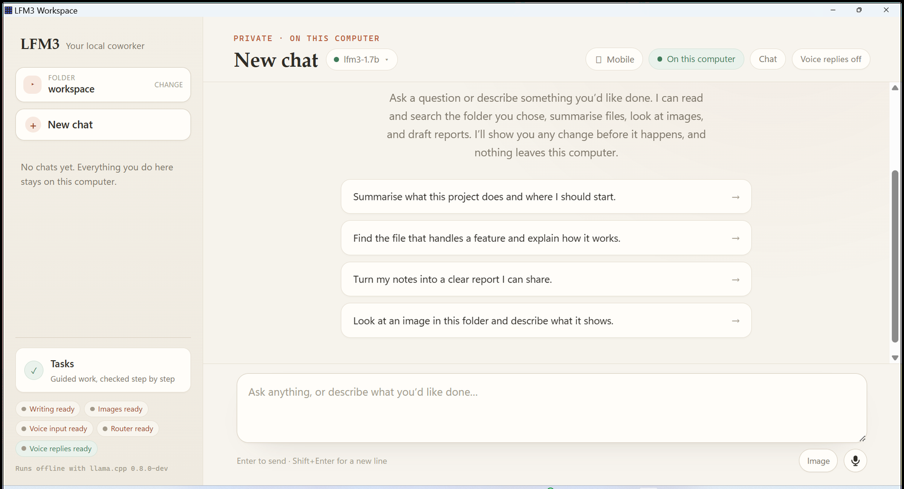

Get started
Documentation
Everything you need to install LFM3 Workspace, run its four local models, and understand what the harness will and will not do on your behalf.
LFM3 Workspace is a free desktop AI coworker for Windows and Linux. It runs Liquid AI's LFM3 model family on your own CPU through llama.cpp, reads the folder you choose, drafts reports and edits, and asks for your approval before it writes a file. There is no account, no cloud service, and no telemetry out of the box.
The primary surface is a conversation. You can type, attach an image, or record a voice message, and the local models can map a folder, find and summarise files, trace related files, inspect images, and propose a Markdown report or file edit. Anything that must be machine-certified runs as a verified task instead, where frozen acceptance contracts and provenance-bound evidence decide whether a run passes.
These pages document release v0.1.1. They describe behaviour that ships in this build, including the parts that are deliberately limited.


- Folder chipThe one folder the harness may read and write. Every tool call is confined to it.
- Model selectorWhich local model answers. The role chips in the sidebar show what else is ready.
- Starter promptsBounded example asks. Clicking one sends it; nothing runs on its own.
- ComposerType, attach an image with Image, or record with the microphone. Enter sends.
- TasksVerified runs with frozen checks, for work that must be machine-certified.
Start here#
Pick the path that matches why you opened the documentation:
The documentation set#
Get started
- QuickstartFirst run, end to end.
- InstallAll three packages.
Using the app
- ChatTurns, routing, voice, attachments.
- ModelsThe four roles and their weights.
- Approvals and safetyDiffs, Deny, confinement.
- JobsThe agent loop.
- Verified tasksFrozen acceptance contracts.
Reference
- Tool referenceEvery capability a model can call.
- CLI referenceThe
lfm3binary. - ConfigurationEnvironment variables and
setup.json.
Under the hood
- ArchitectureUI, shell, engine, processes.
- Privacy & licensingNetwork paths and terms.
- TroubleshootingCommon failures and diagnostics.
- Build from sourceRust, Node, Tauri, tests.
Two kinds of work#
The app has one engine and two completion rules. Keeping them apart is the central design decision, so it is worth stating plainly before anything else.
| Chat | Verified tasks | |
|---|---|---|
| Best for | Thinking out loud, exploring a folder, drafting a report | Work that must be machine-certified |
| Completion rule | The model stops; a person reads the answer | Frozen acceptance checks decide, and a person approves each step |
| Evidence | Tool output is shown in the transcript | Provenance-bound checks over real file digests, recorded in a SQLite journal |
| Can a chat message count as proof? | Not applicable | Never |
| Writes | Exact diff plus Allow once | Per-step approval, then execution and verification |
| Model freedom | A bounded loop with a todo list | A frozen, approved plan with retry budgets |
A chat message, a tool result, or an approval can never satisfy a mission check. A verified run never writes through the chat approval path. If you remember one rule from this documentation, make it that one.
The four local roles#
Each role is a separate GGUF model served by a local llama-server bound to 127.0.0.1. The harness picks roles per turn; you can see the state of all four in the Models menu.
| Role | Model | What it does | Port |
|---|---|---|---|
| Act | LFM3-1.7B | Plans, calls tools, reads output, writes the deliverable | 8080 |
| Look | LFM3-VL-2B | Observes one image at a time and reports what it sees | 8081 |
| Hear and speak | LFM3-Audio-2B | Transcribes recordings verbatim, and speaks answers through llama-tts | 8082 |
| Decide | d1-2B | Routes each turn and answers the two decision gates | 8083 |
Only the acting model is agentic. The other three have narrow, typed jobs, and the harness will not hand any of them the planning loop. The Models page explains each role, its measured strengths, and its documented limits.
What it will not do#
The constraints below are enforced in code, not just documented:
- No file write or edit from chat without an explicit per-action approval.
- No path outside the workspace folder, whether reached directly, through
.., or through a link. - No shell tool in chat. There is no command execution surface in the interface.
- No remote speech recognition, audio upload, or cloud transcription.
- No background model downloads. Only the Models menu, only after a click.
- No browsing, cloud fallback, or hidden network calls at runtime.
- No pass without provenance-bound evidence, and no weakening of a check during retry.
- No concurrent workspace-mutating runs, and no silent resume after an interruption.
- No owned model or tool process left running after the app exits.
The Privacy, security, and licensing page lists the three network paths that do exist and the exact scope of each.
Conventions used here#
- Commands are shown for both hosts where they differ. Windows examples use PowerShell; Linux examples use bash.
%LOCALAPPDATA%\LFM3Harnessis the Windows data directory. On Linux it is$XDG_DATA_HOME/LFM3Harness, or~/.local/share/LFM3Harness.- UI labels you can click appear in bold, for example Models or Allow once.
- File paths in tables are relative to the folder you chose unless they start with a drive or a slash.
- Where a number comes from a measurement, the measurement is named. The project does not round benchmarks up.
Version and support
This documentation covers v0.1.1, released 1 November 2026. The application is an independent community project for running Liquid AI's models locally; it is not affiliated with, endorsed by, or sponsored by Liquid AI. macOS is not supported.